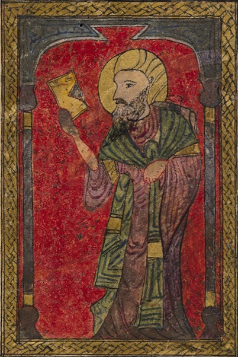
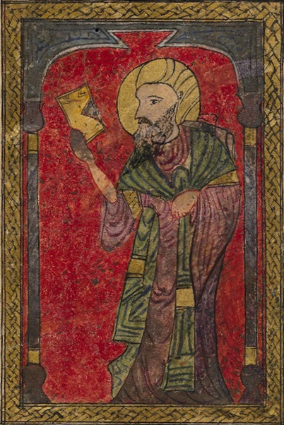

Visit Our Main Website
This site is only a showcase and we invite you to visit https://dioscorides.org/ where you can find all the information on traditional medicine and medicinal herbs, some of which were discovered by Dioscorides and are still used today.
Our mission is to promote the use of natural products that are effective in preserving and improving health and well-being, as well as in combating aging and health conditions. Our goal is to inform about ancient natural herbal remedies, reviewed from a modern perspective in light of new discoveries in pharmacology and the molecular mechanisms of the active ingredients contained in plants.
Pedanius Dioscorides was a Greek who lived between 40 and 90 AD. He was a surgeon and military physician to Emperor Nero. He wrote the book De Materia Medica, in five volumes, in which he described more than 600 plants. The book constituted the pharmacopoeia of the Western world and remained the medical text par excellence until the 17th century.
The consistency between later pharmacopoeias and De Materia Medica is remarkable, demonstrating that Dioscorides' work formed the basis of Western natural medicine throughout the Roman and medieval periods and almost into the modern period. The information contained in De Materia Medica is of historical interest and some of it is still valid today, more than 2,000 years later.
The notes on plants, given in the De Materia Medica, include their habitats, methods of preparation, and medicinal use of the active ingredients they contain. Many of the common and scientific names of plants still in use are derived from Dioscorides.
Incidentally, it is worth noting that Dioscorides was probably the first to use willow to reduce fever and pain. As demonstrated in 1825 by Italian chemist Francesco Fontana, willow contains salicin, which was extracted from the bark in 1828 by German Johann Buchner. Salicin is a glycoside from which salicylic acid was isolated, later modified into acetylsalicylic acid, the modern aspirin.
 
